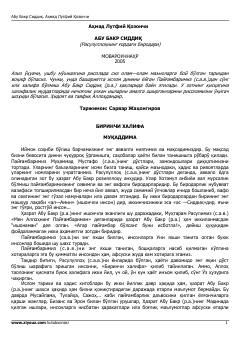

ABIslomning birinchi xalifasi Abu Bakr Siddiqning hayoti va fazilatlari haqida.
Bu kitob islom tarixidagi birinchi xalifa Hazrat Abu Bakr Siddiq (r.a.) hayoti va faoliyatiga bag'ishlangan. Unda Payg'ambarimiz Muhammad (s.a.v.) bilan do'stligi, xalifalik davridagi ulkan ishlari va shaxsiy fazilatlari sahih hadis va rivoyatlar asosida bayon etiladi. Asar o'quvchini Islom tarixining muhim bir davri bilan yaqindan tanishtiradi.